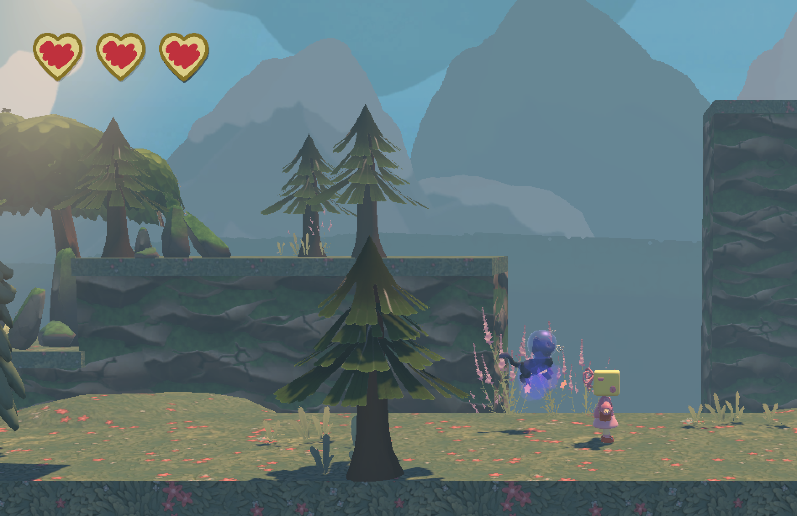
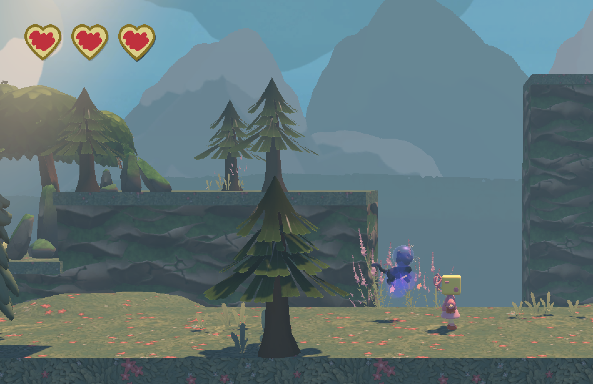

Toaster Girl
Minor Game Design & Development
Februari - Juni 2025
In mijn derde studie jaar heb ik de minor Game Design & Development gevolgd. Gedurende deze minor heb ik (met de rol van artist en UX-designer) samen met mijn klas de game ‘Toaster Girl’ gecreëerd. Ik heb me tijdens dit project verder ontwikkelend in character design, Game UI en het werken met Adobe Substance Painter.
De Game pagina op itch.io: Toaster Girl
Voor de Toaster Girl game zat ik binnen het team dat de main character/protagonist ging ontwerpen en programmeren.
Als artist in het team kreeg ik de taak om concept art en een character sheet te maken voor ‘Toaster Girl’.
Hierbij maakte ik gebruik van richtlijnen binnen de art bijbel van het team voor consistentie binnen de art van de game.
Ik ben door verschillende rondes van concepting en feedback gegaan voor het uiteindelijke resultaat.
Ik heb hierbij gebruik gemaakt van ‘blocking’ (basis vormen gebruiken voor een silhouet), en voor het eerst een character sheet gemaakt waarmee de 3D Artist een model kon maken.
Ik heb hierbij geleerd dat het oké is om opnieuw te beginnen met ontwerpen als het nodig (en mogelijk) is voor het project.


Voor de game heb ik ook een logo gemaakt voor in het hoofd menu en promotie voor de gam op de game pagina en stickers.
Ik heb hiervoor zes versies geschetst met gebruik van kleuren en beeldelementen van Toaster Girl.
Gebaseerd op feedback vanuit de artist department van de game.
Hierbij heb ik onduidelijke delen van de schets (zoals de stekker) aangepast voor een speels en passend logo voor de game.

.png)
Tijdens de Minor heb ik voor het eerst met Unity gewerkt om de UI (user interface) van de game in elkaar te zetten.
Voor de game heb ik gewerkt aan visuals voor een health system, het pauze menu en het hoofdmenu.
Ik heb voor de UI geprobeerd om het thema van de game erin te verwerken met toast en een broodrooster als pauze menu (waar de toast uitkomt als je de game pauzeert of een ander menu opent).
De elementen hiervoor heb ik in Procreate en Adobe Illustartor getekend en als sprites in de prefab gezet die de programmeur had klaargezet.
Hierbij was ik verantwoordelijk voor het design, en heb ik rekening gehouden met wensen vanuit verschillende teams.
 



Om de 3D modellen van Toaster girl kleur te geven heb ik geleerd om met Substance Painter textures toe te voegen.
Voor de textures heb ik met behulp van verschillende tutorials en feedback van teamgenoten de lagen van kleur en licht van twee 3D modellen samengesteld.
Ik heb voor deze textures gebruik gemaakt van UV mapping en masks zodat de kleurenlagen netjes op het model waren weergegeven.
Ik heb deze textures in de game toegepast op het model zodat de speler van de game een ingekleurd model heeft van Toaster Girl.